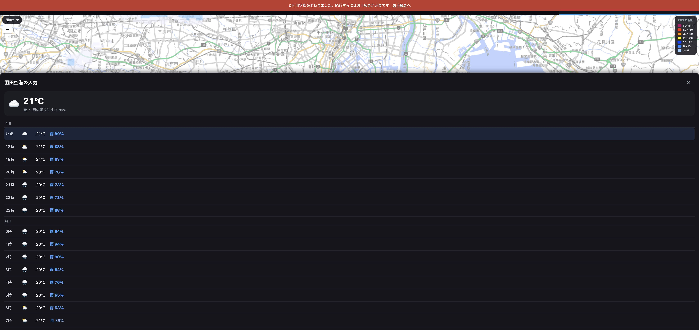

はい、空港ツールの右隣です
そこに天気も入れました。
タブの並び
「乗り場」タブはお使いの会社では出ない設定なので、雨雲が空港ツールの右隣になります
ボタンが3つになりました
地図の真ん中に見えている場所の天気が出ます
実際の画面

「羽田空港の天気」。いまの気温と、時間ごとの雨の降りやすさ
雨の降りやすさが50%以上だと、数字が濃い青になります。ぱっと見て「この時間から降る」が分かるようにしています。
出るもの
場所を変えると、その場所の天気に切り替わります
まとめ
- 雨雲タブは空港ツールの右隣です。
- その中に「☁ 天気」を足しました。雨雲と同じ場所の天気が出ます。
- 費用はかかりません（日報の天気で使っている先と同じ）。
- テスト1197件すべて通っています。
いま dev です。触ってみて、よければ「本番へ」と言ってください。